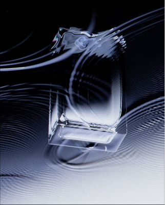

HTMS
team
Minseok Choi & Taehyun Hwang
"Cold but maintaining its own temperature, we
create a mood for those who seek it."
TEAM'S HTMS
Minseok brings structural precision to every formulation, reading identity the way an architect reads space. Taehyun synthesizes concept into lived experience, translating the invisible into something you can wear.
MINSEOK
CHOI
We sample your raw data, analyzing
preferences and latent potential.

TAEHYUN
HWANG
Purifying the aesthetic. Removing
unnecessary elements until only the
essential structure remains.
Finding the Unique Scent
for Each Person
In a world full of mass-produced fragrance,
finding a scent that truly reflects your inner self is rarer than ever. Trends blur into sameness,
leaving a void where your personal signature should be. We cut through the noise with clinical precision.